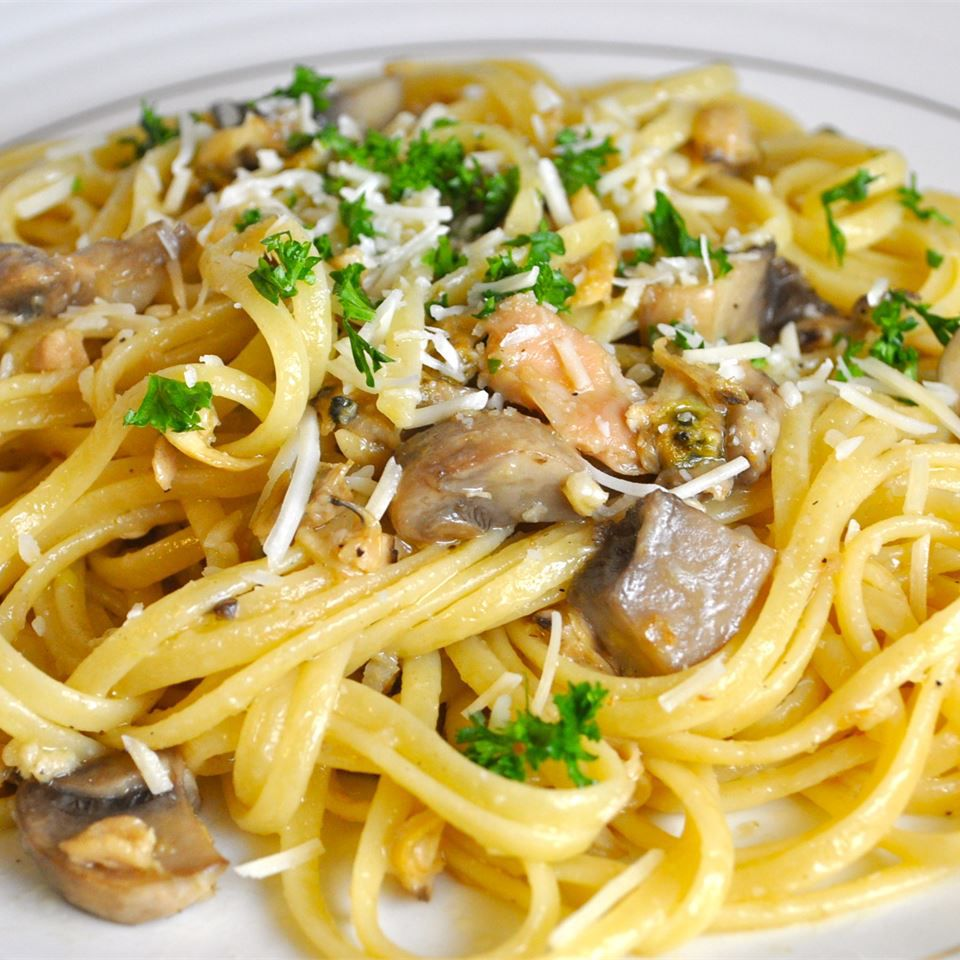

Home
A Clam Linguine Story

Doesn't it look gross? I bet it's gross
Ingredients
- 1 (16 ounce) package linguini pasta
- 2 (6.5 ounce) cans minced clams, with juice
- ½ cup vegetable oil
- ¼ cup butter
- 1 tablespoon dried parsley
- ¼ tablespoon dried basil
- ½ teaspoon minced garlic
- ground black pepper to taste
Probably a lot of black pepper, then
Method
- Bring a large pot of lightly salted water to a boil. Cook linguine at a boil until tender yet firm to the bite, about 11 minutes. Drain.
- While the pasta is cooking, combine clams with juice, oil, butter, parsley, basil, garlic, and pepper in a large saucepan. Cook over medium heat until boiling.
- Serve warm clam sauce over pasta.